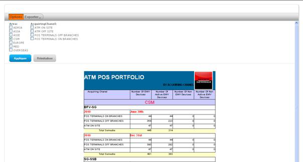

Table of contents Close window
Certains de ces rapports sont paramétrables. Vous trouverez en tête de page sous le bouton OPTIONS des cases à cocher ou des listes déroulantes permettant de choisir des valeurs de sélection des données à faire apparaître dans le rapport.

et de combiner des critères : région, filiale, chanel, …., année et semestre suivant le contenu du rapport. La liste des filiales étant dépendante de la région choisie.